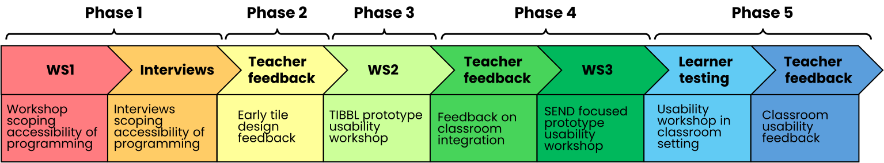
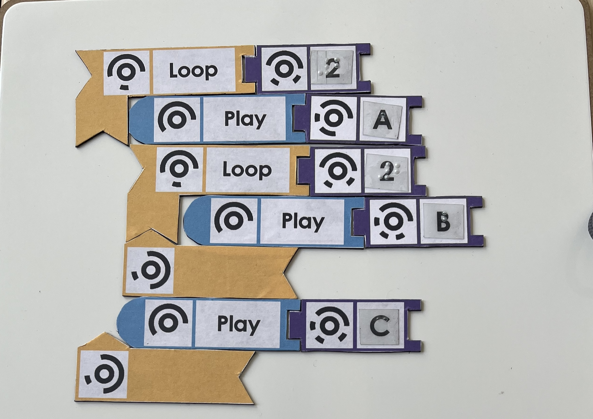
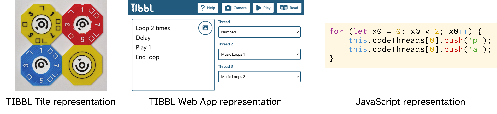

Designing TIBBL: A Tangible Inclusive Block-Based Language for Widening Access to Programming
Authors
- Alexandre Nevsky, Department of Informatics, King’s College London, London, United Kingdom. alexandre.nevsky@kcl.ac.uk
- Xinyun He, School of Education, Communication & Society, King’s College London, London, United Kingdom. xinyun.he@kcl.ac.uk
- Samantha Callaghan, King’s Digital Lab, King’s College London, London, United Kingdom. samantha.callaghan@kcl.ac.uk
- Elliott Hall, CoSTAR National Lab, Royal Holloway, University of London, Egham, United Kingdom. elliott.hall@rhul.ac.uk
- Zihao Lu, King’s Digital Lab, King’s College London, London, United Kingdom. zihao.lu@kcl.ac.uk
- Tiffany Ong, King’s Digital Lab, King’s College London, London, United Kingdom. tiffany.ong@kcl.ac.uk
- Timothy Neate, Department of Informatics, King’s College London, London, United Kingdom. timothy.neate@kcl.ac.uk
- Alex Hadwen-Bennett, School of Education, Communication & Society, King’s College London, London, United Kingdom. alex.hadwen-bennett@kcl.ac.uk
The 28th International ACM SIGACCESS Conference on Computers and Accessibility (ASSETS ’26), October 25–28, 2026, Vila Nova de Gaia, Portugal
Abstract
Access to early programming education is essential yet challenging for blind and low-vision (BLV) learners, especially in mainstream classrooms where introductory tools are often highly visual. Although tangible programming systems show promise for supporting early learning, less attention has been paid to how these systems should be designed for real-world contexts, such as mixed-ability classrooms and their social and practical constraints. Here we describe the design of TIBBL (Tangible Inclusive Block Based Language), a tangible programming toolkit combining physical programming tiles with a web based interface, designed to support early programming learning for BLV and sighted learners alike. Through a five-phase research-through-design process, involving key stakeholders, we surface insights around tangible representations, pedagogical scaffolding, and the social and infrastructural conditions that shape whether access is sustained. We reframe accessible tangible programming as a matter of inclusive classroom infrastructure rather than isolated assistive provision, informing future accessible programming pedagogy.
CCS Concepts
Human-centered computing: Accessibility design and evaluation methods
Keywords
- Inclusive learning
- mixed visual abilities
- blind
- accessibility
- tangible education technology
- computational learning
- computer science education (CSE)
Introduction
Computing and programming education in school curricula has received increased emphasis internationally in recent years [42]. However, access to early programming experiences remains uneven for blind and low vision (BLV) learners [41]. This partially due to introductory programming tools such as Scratch depending on visual layout, drag-based interaction, and screen-based outputs, which makes early programming experiences difficult to access non-visually [23]. Approaches explored to improve access include adaptations to text-based environments, accessible block-based GUI interfaces, auditory programming tools, and tangible systems [10]. Tangible programming tools in particular have been presented as potential accessible alternatives to block-based languages for introductory programming [17, 24]. While progress has been made in this space, creating computing classrooms inclusive of young BLV learners still requires providing multiple ways to engage with programming concepts [11]. This is currently challenging to achieve as the range of publicly available introductory programming tools that are inclusive of BLV learners is limited [2]. Additionally, the cost of existing commercially available tangible programming tools is prohibitive for many educational institutions [31].
The motivation of the project described in this paper was to develop design insights which could be used to inform the development of new inclusive and affordable tangible programming tools that take into account the realities and limitations present in real world mixed-visual-ability classrooms. This motivates our research question: how can a tangible programming toolkit be designed to widen access to early programming in mixed-visual-ability classrooms? In this paper, we address this question through the iterative design of TIBBL, a tangible programming toolkit that combines physical programming tiles with a web-based interface. Rather than presenting only a final artefact, we focus on the design work required to develop such a toolkit and on what that process reveals about designing tangible programming interfaces for BLV learners in school settings. The toolkit was developed through workshops, interviews, consultations, and feedback sessions involving professional BLV programmers, teachers, education specialists, and BLV learners, with emphasis on the design knowledge that emerged. We draw out insights from BLV programmers and teachers on how tangible programming systems could support early programming learning, using these insights to develop initial guidance for future classroom-oriented toolkits. The paper situates the work in relation to existing research on programming access and tangible programming, reports the Research-through-Design process [36] through which TIBBL was developed, then presents the resulting design work and its implications for future design of tangible programming systems for BLV learners.
Related Work
Programming Education for BLV Learners in Mixed-Visual-Ability Classrooms
In the England, the majority of BLV learners are taught in mainstream schools in mixed-visual-ability groups [24] and computing is a statutory part of compulsory schooling, with teachers expected to provide programming experiences for all learners between the ages of 5 and 14 [8]. However most tools designed for early programming education rely heavily on visual cues and are therefore inaccessible for BLV learners [23]. Research has demonstrated that tangible programming tools which are inclusive of BLV learners can facilitate mixed-visual-ability teaching and can support non-specialist teachers in running programming activities with children who have different access needs [24].
This classroom context also introduces design constraints around collaboration and shared use. Work on collaborative programming activities with BLV children shows that participation depends on shared goals, workspace arrangement, and support for shared awareness [30]. These factors become especially relevant when the programming representation is a jointly handled physical artefact, requiring learners to coordinate attention, track state changes, and negotiate turns without relying on sight. Intervention studies in classrooms and workshops with BLV learners also report that tactile and multimodal strategies can support engagement, while recurring difficulties remain around abstract programming concepts and code navigation [3].
Accessibility in Early Programming
Access barriers in programming are closely tied to how mainstream tools encode structure, navigation, and feedback. In introductory programming environments such as Scratch, functions and constructs are often presented through visual layout, menus, toolbars, colour coding, and pointer-based interaction [19]. For BLV learners, this can make it difficult to discover available actions, maintain an overall sense of code structure, and follow how a program is arranged and executed [29]. Programming accessibility has the recurring difficulty of forming an overall understanding of code structure when access is primarily sequential, which motivates alternative representations that make structure more readily available [10]. These barriers matter in education because they affect more than interaction with an interface. Inaccessible materials can prevent learners from preparing for sessions or revisiting examples outside class time, while classroom tasks may assume visual inspection of code state or output [4]. Teacher practices can also create friction when they rely on rapid visual checking of work or on platforms that do not integrate well with assistive technology [39]. The accessibility of a programming tool is therefore a property not only of the interface itself, but also of how it fits instructional workflow and classroom use.
Work on levels of abstraction describes novice programming as movement between different forms of the same idea, such as a task, a design representation, code, and execution [43]. Design representations can support planning, explanation, and debugging, and can help learners connect what they intend a program to do with how it is implemented [43]. For BLV learners, this creates an additional requirement that representations remain accessible not only during authoring, but also during explanation, revision, and debugging [26]. This gives particular relevance to stable external representations that can be assembled, inspected, and discussed without relying on screen-based overview alone. Tangible configurations that can be related to executable programs offer one way of supporting such work, by giving learners a persistent design representation that remains available during discussion and revision [24]. More broadly, work comparing different programming modalities suggests that the form of representation itself shapes novice programming practices, making representation a design decision rather than a neutral delivery format [44].
Tangible Programming Systems for BLV Learners
Introductory programming education often uses block-based environments that support learning by assembling blocks instead of memorising syntax [21]. For BLV learners, the block metaphor can be useful at a conceptual level, yet typical implementations rely on visual layout, colour coding, and drag interactions that are not directly accessible [23]. Work on accessible block-based programming has identified major interaction and representation barriers, and proposed guidance for supporting non-visual navigation and manipulation [10]. Related work has also explored auditory cues to improve comprehension and navigation in block-based tools, aligning feedback with structural elements that are otherwise conveyed visually [19].
Tangible programming systems offer a different starting point by making program structure physical, with multiple tools being developed to be inclusive of BLV learners, such as Code Jumper [24], StoryBlocks [17], and TIP-Toy [5]. Code Jumper is the only one of these systems that is currently commercially available and features physical pods connected by wires to a hub, which communicates the program structure via Bluetooth to the Code Jumper app. Programs produce sound in the form of music, stories, and poetry. Hadwen-Bennett et al. [11] argue that BLV learners should be given several distinct ways to engage with programming, including inclusive tangible tools of this kind, yet publicly available options that meet this need remain limited, with Code Jumper the main example currently on the market. Code Jumper is itself designed with mixed-ability use in mind, and TIBBL’s contribution lies in providing a toolkit that can be deployed across settings with differing technical and budgetary constraints, together with the design knowledge produced through the research-through-design process reported here. StoryBlocks and TIBBL use passive tiles read through computer vision, while Code Jumper relies on electronic blocks wired to a hub. All three systems support iteration and selection, while variables appear only in Code Jumper and TIBBL, and functions are unique to TIBBL. TIBBL and Code Jumper both allow changeable sound sets, and TIBBL is further distinguished by running as a web app that needs no dedicated hardware or installation.
Many other tangible programming systems have been described in the literature, however most of these are not designed to be specifically inclusive of BLV learners. The outputs of such systems range from comparable systems which use physical pieces to create musical output [31] to the use of tangible or multimodal interfaces to support interaction with robotics and physical computing, again shifting emphasis away from screen-based representation [14]. Low-cost, low-technology tangible programming has also been explored outside the accessibility literature, for example through the Tangible Africa project [1], which is not designed to be accessible to BLV learners but shares TIBBL’s concern with affordability and ease of local production. Across these systems, sensing and construction methods vary. Some rely on RFID to detect pieces placed on a mat [25], while others use wired or microcontroller-based approaches built from inexpensive components [40]. Earlier work on tangible programming for classrooms also emphasised the value of durable, inexpensive parts and a separate scanning stage that allows programs to be assembled away from a computer and then compiled through a dedicated interface [12]. These variations suggest that practical classroom uptake depends not only on accessibility and pedagogy, but also on how a toolkit is produced, maintained, and adapted in local school contexts.
Prior deployments of physical programming systems further show that persistent physical representations can keep program structure available during explanation and debugging, which is particularly relevant in classroom settings where learners and teachers need to discuss program behaviour together [24]. However, while tangible systems for BLV learners have demonstrated the value of physical and audio-based programming representations, less attention has been given to how such systems should be shaped for mixed-visual-ability classroom use, or to how their materials and workflows might be adapted by teachers according to the resources available to them. This leaves a gap around classroom-oriented tangible programming toolkits that are accessible, practical to produce, and designed with shared classroom use in mind.
Methodology

Research-through-Design Approach
This work takes the form of Research-through-Design (RtD) [36], treating the design and refinement of artefacts as a way to inquire into a problem space through making, reflection, and iteration, with knowledge emerging through both the development of the artefact and analysis of the decisions, constraints, and responses encountered [9]. We use this framing to examine how a tangible programming toolkit can be developed for early programming activities in mixed-visual-ability classrooms, with the toolkit functioning as both the outcome of the work and the basis for producing broader design knowledge [45]. We treated the tiles, web app, and supporting materials as evolving design artefacts, using each stage of the process to refine the system and to examine how tangible representations, interaction methods, and classroom constraints shaped its development. The work began with scoping activities that established the initial design direction, then continued through several iterative phases in which workshops, interviews, consultations, and feedback sessions informed subsequent versions of the toolkit. The paper’s main contribution is the design knowledge produced through this process and should be read on those terms and not as an empirical evaluation of a finished system. The learner testing described below is a formative part of the design process, informing the toolkit’s development, and it does not validate a completed artefact.
Participants
We recruited 14 participants (7F/6M/1NB) across the main design and feedback activities, with some taking part in more than one stage – Table 1 summarises participants’ roles, demographic information, and activities attended. We also received 7 responses from teachers to a survey about programming education in mixed-visual-ability classrooms, shared through professional networks and the CAS Include group. These survey respondents did not take part in the workshops, interviews, feedback sessions, or learner testing. The participant group included 3 BLV professional programmers, 7 teachers or education specialists, and 4 BLV students. The BLV programmers and one BLV learner were recruited through the Program-L mailing list for BLV programmers, after obtaining gatekeeper permissions, while teachers and education specialists were recruited through the CAS Include mailing list and through professional networks. The BLV learners in the learner testing were recruited through Martin, a Qualified Teacher of Children and Young People with Vision Impairment (QTVI) who participated in this research. After obtaining permission from senior leadership, he distributed information sheets and consent forms to students and parents at his institution to participate. Participation was voluntary, with parent and student consent obtained prior to participation.
Most sessions were conducted in person at King’s College London, while the interviews were conducted online through video calls, and teacher feedback was collected asynchronously. The workshops lasted approximately 2 hours, attended by several members of the research team, while interviews were one-on-one and lasted about an hour. The study received ethical approval from King’s College London ethics board, and all participants provided informed consent prior to participation. Participants were not compensated, following our institution’s guidance for this kind of design engagement work, but we offered to reimburse travel costs to the sessions. We provided accessibility accommodation by offering alternative participation modes where possible, asking participants in advance about access needs, providing information sheets and consent materials in screen-reader-accessible formats with electronic consent options, supplying workshop materials in Braille and large print, and arranging venue guidance where needed.
| Name | Role | Vision Impairment | Gender | Activity |
|---|---|---|---|---|
| Carl | Programmer | SSI (Braillist) | Male | WS1 |
| Paul | Programmer | SSI (Braillist) | Non-binary | WS1, WS2 |
| Quin | HE Teacher | SSI (Large Print User) | Male | Interview, WS2 |
| Vince | Grade 12 CS Student | SSI (Braillist) | Male | Interview |
| Beth | Programmer | SSI (Large Print User) | Female | Interview |
| Bella | K-12 QTVI | None | Female | WS1 |
| Martin | K-12 QTVI | None | Male | Interview, teacher feedback |
| Tara | K-12 SEND Computing Teacher | None | Female | WS3 |
| Daphne | K-12 SEND Computing Consultant | None | Female | WS3 |
| Helen | K-12 SEND Computing Consultant | None | Female | WS3 |
| Freya | Computing Education Researcher | None | Female | WS3 |
| Gordon | Grade 9 CS Student | SSI (Large Print User) | Male | Learner testing |
| Liam | Grade 9 CS Student | SSI (Braillist) | Male | Learner testing |
| Winda | Grade 8 CS Student | SSI (Braillist) | Female | Learner testing |
Design Process
We organised the design process into an initial scoping stage followed by a series of iterative design phases, across which the tiles, web app, and supporting materials were progressively revised in response to workshops, interviews, consultations, and feedback sessions.
Scoping and Context

Given that block-based languages such as Scratch are the most common way to introduce young learners to programming in England [34], in Phase 1 we chose to develop an initial proof of concept based on the structure employed by such languages. The proof of concept used shaped tangible blocks with fiducial markers (see Figure 2) and a simple web app that parsed the arranged blocks into JavaScript to produce sound outputs. The early tangible design used different shapes to distinguish block types, directional arrows to suggest how loop pieces connected, and separate parameter pieces that slotted into the main blocks. The web app used the TopCodes library 1 to recognise the markers through a camera feed. Alongside this, we ran an exploratory online survey in Qualtrics with 7 teachers who did not take part in the later workshops, interviews, or feedback sessions. The survey focused on classroom context, including use in mixed-visual-ability groups, what teachers considered a successful programming lesson, devices available in school settings, and the kinds of outputs they thought would engage learners, informing practical design assumptions including device support.
We then used the initial proof of concept as a design probe in Workshop 1 (WS1) and in a set of follow-up interviews. WS1 included 3 participants, took place at the university, lasted around 2 hours with a short break, and was attended by several members of the research team. The workshop began with discussion of participants’ experiences of learning and teaching programming, then moved to a hands-on exploration of tangible programming tools, including our proof of concept, to gather feedback on how a tangible system might support early programming learning for BLV students. The workshop discussion focused on how younger BLV learners encounter programming as a first experience, including the need to separate programming concepts from syntax, the role of tangible interaction in introducing ideas such as sequence and looping, and the difficulty of assuming strong screen-reader proficiency at this stage. Participants also discussed mixed-visual-ability classroom use, the risk of requiring specialist tools that set BLV learners apart from their peers, and the need for outputs and workflows that would be quick to understand and motivating to use. Feedback on the proof of concept focused on the tile design and the general workflow of the system. Participants questioned how clearly the arrangement conveyed control flow, particularly around nesting and loops, and commented on the tactile distinction between pieces, the use of separate parameter blocks, and the practical issue of aligning a camera with the board during use. The initial web workflow also exposed friction around how the camera view and controls were accessed on smaller screens.
We then conducted semi-structured online interviews, lasting about 1 hour each, with 4 additional participants who could not attend WS1, covering the same broad topics but without the hands-on demo. The interviews extended the scoping stage by adding further accounts of learning to program as a BLV student, barriers in block-based and text-based environments, and views on what an initial programming toolkit should prioritise. These discussions reinforced the emphasis on a tangible-first experience, understanding programming concepts before syntax, and fitting mainstream classroom practice without relying on specialist technical skills.
Iterative Design
![The figure shows the evolution of four tiles (play, loop, thread and function) across the five stages. In phase 1, there were only play and loop. Play is a blue rectangle with a TopCode, the text "Play", the Braille for "Play" and a notch on the right into where a value block could be slotted in. Loop is orange and has two rectangles, one for the start of the loop and the other for the end of the loop. These also have a TopCode with text and Braille labels, and a notch for a value block. Other blocks are supposed to be slotted between the loop and end loop blocks. There are no thread or function blocks in Phase 1. Starting in Phase 2, the play and loop tiles are an octagonal, with dots on each edge for numbers from 1 to 8. Play is still blue, and loop is now yellow. Play has a wavy line around the TopCode in the middle, loop has a circle. There are also the thread and function tiles, which are square, with thread being light blue and function being pink. The thread has dots on the edges indicating which thread it is (1, 2, or 3), and has no other markings. Function has a gear wheel around the TopCode, and no numbering. In Phase 3, the numbers are replaced with an abstract numbering system where an edge represents one, two edges represents two, a square (so four edges) represents four, and two squares (so eight edges) represents eight. The wavy line around the TopCode on the play tile is made smoother with larger oscillations. No other changes occur. In Phase 4, the numbering changes again, where the odd numbers of the play and loop tiles are normal Arabic numerals, and even numbers remained to abstract edge numbering scheme. The thread tile has both the Arabic and abstract number notation. There is now a notch on the edge where the number 1 is. The wavy line on play is removed. The gear pattern on the function tile is simplified. In phase 5, the play and loop tiles remain the same. The thread and function tiles have their corners clipped, making them non equilateral octagons. The thread tile is now white.](./figures/tile_changes.png)
Following the scoping stage, we developed the toolkit through a series of iterative design phases in which changes to the tiles, web app, and overall workflow were informed by workshops, teacher feedback, and consultation with the university’s Research Software Engineering (RSE) team. Across these phases, the main design questions concerned tangible representation of programming concepts, how learners would move between the tiles and the web app, and how the toolkit could fit classroom practice while remaining practical to produce and modify – see Figure 1.
In Phase 2, we moved away from directly reproducing the nested structure of visual block-based languages and instead redesigned the tangible representation around rotatable octagonal tiles – see image 2 in Figure 3. This change followed concerns raised in WS1 about how clearly nesting could be represented tangibly and whether the initial design translated well into a physical system. The revised tiles used rotation to select values, with tactile markings to indicate those values without requiring Braille, since not all BLV people can read it, and introduced shapes and layouts that distinguished functions and threads from the main program flow. We also expanded the tiles to include core programming concepts expected in early programming education, including sequence, iteration, selection, variables, and functions. We modified the web app to include program readout and touch-based execution. We also sought input from two UX/UI consultants and a research software analyst at the university RSE team through meetings and asynchronous feedback, on the accessibility and interaction design of the web app. This feedback focused on the practical role of the web app within a tangible-first workflow, including setup, gesture design, and how the system might be operated by teachers and more advanced learners. Phase 2 concluded with teacher feedback on alternative tile designs and formats, which confirmed the revised representational direction and informed the next round of refinement.
Phase 3 focused on practical use conditions, physical handling, and debugging support. We explored different camera arrangements, developed a storage box for the tiles, and tested several fabrication approaches, including 3D printed versions, micro capsule paper mounted on magnetic sheets, and board-game style manufacture. On the web app side, we implemented a second version that added a countdown before running or reading a program, improved feedback through program readout and error messages, supported image rotation and reading direction changes to accommodate different camera setups, and added alternative input methods including keyboard and clicker controls. Workshop 2 (WS2) took place at the university with two BLV programmers, lasted approximately 2 hours, and was attended by three researchers. Participants explored the revised toolkit hands-on and gave feedback on the updated tile layout, value encoding, materials, triggering mechanisms, and debugging support. This phase made clear that camera positioning, material handling, control methods, and meaningful error feedback were central to usability, not separate from the programming representation. Feedback at the end of the phase pointed to further changes in tactile distinctiveness, value representation, and device interaction, which shaped the next phase.
Phase 4 refined the tactile and visual form of the tiles and examined how the toolkit might fit classroom use more broadly. Building on Phase 3 feedback, we revised the 3D printed tiles to improve tangible distinction between tile types, changed the way values were represented and adding large print digits – see image 4 in Figure 3. We then gathered teacher feedback by comparing earlier and current versions of the toolkit, followed by Workshop 3 (WS3), which took place at the university in a format closer to a conference workshop. Participants attended talks, explored several tangible programming tools through demonstrations, and gave feedback on the latest version of our toolkit in relation to classroom fit, accessibility, and broader educational use. Teacher feedback at this stage focused on the tactile clarity of values and tile types, the trade-off between tile size and program length, the practicality of the web app setup, and the value of text and spoken readout. WS3 extended this by situating the toolkit alongside other tangible programming approaches and by bringing in views from Special Educational Needs and Disabilities (SEND) teachers and computing education professionals on mixed-visual-ability use, multimodal interaction, and the wider applicability of the design.
In Phase 5, we produced a further revision of the tile set based on the previous feedback, including changes to tile size, value encoding, tactile markers, and the distinction between frequently used tile types. We also revised the web app based on Phase 4 feedback by refining the error messages, adding new sound sets, and ensuring that the arrow keys did not trigger actions when the text input field was in focus. We then conducted a learner workshop with 3 BLV students in grades 8 to 10 at their school, seeking feedback on the tiles and web app, including ease of use and general impressions of the toolkit. For this stage of design feedback, we deliberately recruited students who were past complete-beginner level but still at school, so that they could give considered design feedback on the toolkit while still reflecting from a near-beginner viewpoint. We did not recruit complete beginners to evaluate a finished system. The learner testing sessions took place at the students’ school during lessons when they are normally withdrawn from mainstream classes for one-to-one computing tuition. The sessions were conducted in a familiar lesson context by Martin, their QTVI, with one student per session and no researchers present. In each session, the student was first given some background information about the tool, after which Martin introduced each tile type one by one by modelling it in use before encouraging more open exploration. Students filled out a pre-session questionnaire about their programming experiences, and at the end of the session they completed written reflections, commenting on the toolkit and its effectiveness. Phase 5 also included asynchronous teacher feedback, in which Martin provided reflections on the revised prototype after the learner testing sessions.
Data Analysis
We analysed the qualitative data generated across the design process using reflexive thematic analysis [7], including transcripts from the workshops, interviews, and teacher feedback responses, alongside the exploratory teacher survey and design records. The survey responses were reviewed in an ad hoc manner to identify classroom constraints, device availability, and other contextual issues that informed the educational framing of the project. Workshop and interview recordings were transcribed automatically and then manually cleaned before analysis in NVivo 15. One researcher coded all transcripts, refining codes and themes iteratively through repeated discussion. Our coding was informed by the Critical Embodied Sense (CES) framework [11], which is grounded in Vygotskian cultural-historical theory, embodied cognition, and critical disability studies. CES foregrounds how learners’ bodily configurations, emotions, tools, and sociopolitical contexts shape both their sense of programming concepts and their sense of themselves as programmers, explicitly challenging ableist hierarchies that privilege particular bodies, representations, and ways of knowing. We also incorporated design-oriented coding related to the evolving toolkit and its use in classroom settings. The coding framework and candidate themes were refined through meetings with two additional researchers, generating 312 codes, grouped into 4 themes and 12 subthemes. We reviewed design records alongside the coded data to trace how findings informed subsequent iterations and to support the later synthesis of design insights.
The TIBBL Toolkit
![A six by three grid of tiles, eighteen total tiles. All tiles are equilateral octagons, except for the ’thread’, ’function’, and ’end function’ tiles which are non-equilateral octagons, shaped closer to a square with clipped corners. All tiles have a TopCode in the middle, a sort of circular 13-bit bar code. The ’play’, ’loop’, ’if less than’, ’delay’, and ’variable’ have values associated to them, with their design having a number representation on each edge of the octagon. Odd numbers are represented using Arabic numerals, while even number are represented abstractly with connected lines forming squares (e.g. two lines forming a right angle represents two, four lines forming a square represents four). There is a physical notch on the edge where the value is one. The tiles are colour coded by their function. ’play’ and ’play x’ are blue. ’loop’ and ’end loop’ are yellow. ’if less than’, ’else’ and ’end if’ are green. ’function’, ’end function’, and ’call function’ are pink. ’thread 1’, ’thread 2’, and ’thread 3’ are white. ’delay’ is orange. ’variable’, ’random’, ’add’, and ’subtract’ are purple. Some of the other tiles have other symbols on them. ’play x’ has the letter X on four edges. ’random’ has the letter R on four edges. ’add’ has the plus sign on four edges. ’subtract’ has the subtraction sign on four edges. Some of the tiles also have a symbol around the TopCode. The blue play and white thread tiles have no symbol. Yellow loop tiles have a circle. Green conditional tiles have a circle with lines coming out. The orange delay tile has a dotted line circle. The pink function tiles have a gear. The purple variable tiles have a wavy circle.](./figures/final_tiles.png)
![A grid of seven images showing the different physical elements of the TIBBL toolkit. Image 1 shows four 3D printed octagonal tiles with a notch where the value 1 is. These have the base colour of the tile set, such as yellow for the looping tiles, red for delay tiles, and blue for play tiles, as well as black highlights for the raised patterns on the tiles. Image 2 shows the same four 3D printed octagonal tiles, but without the black highlights. Image 3 shows the tiles printed on microcapsule paper, or swell paper, where the dark ink is raised. This includes the numbers and patterns on the tiles. Image 4 shows the black 3D printed storage box for the tiles with Braille and English text marking where the different tiles sit. This storage box allows users to take tiles out from the top, with separated segments for each tile compartment. Image 5 shows the black 3D printed frame with camera stand, which is a square frame in which tiles can be placed randomly and an arm that holds a small camera which is connected to a device via a USB cable. Image 6 shows the same black 3D printed frame, but this time with a grid to align the tiles against, creating a four by four grid. Image 7 shows the presentation clicker with left and right facing arrow buttons.](./figures/ToolkitFigure.png)
| Tile | Description | # in Set |
|---|---|---|
| Play N | Plays the sound N, where the value of N is set by the tile rotation. | 8 |
| Play X | Plays the sound X, where the value of X is set by the Variable tile. | 2 |
| Loop N | Repeats a set of tiles N times, where the value of N is set by the tile rotation. | 3 |
| End Loop | Marks the closure of a loop. | 3 |
| Thread N | Marks the start of thread N. | 3 |
| Delay N | Creates a delay of N seconds, where the value of N is set by the tile rotation. | 4 |
| Variable | Sets the value of X to N, where the value of N is set by the tile rotation. | 1 |
| Random | Sets the value of X to a random number between 1 and 8. | 1 |
| Add | Increments the value of X by 1. | 1 |
| Subtract | Decrements the value of X by 1. | 1 |
| If | Represents the condition if X < N, where the value of N is set by the tile rotation. | 1 |
| Else | Marks the start of tiles that will run if the output of the condition is false. | 1 |
| End If | Marks the closure of the if statement. | 1 |
| Function | Indicates the start of a function definition. | 1 |
| End Function | Indicates the end of a function definition. | 1 |
| Call Function | Calls the function that has been defined. | 3 |

The final version of TIBBL comprises a browser-based web app and a set of magnetic tangible programming tiles for creating sound-based programs using core programming constructs. The tile set supports sequential execution, looping, delay, variables, conditional branching, function definition and calling, and up to three concurrent threads – this functionality is summarised in Table 2. All tiles have a TopCode marker in the centre for recognition by the web app, while the tile design provides tactile and visual cues for identification and value selection. The tiles are octagonal, with a subset given a more square appearance to distinguish structural elements (i.e. thread and function tiles) from the main program flow. Tile types are further differentiated through raised markings, along with colour coding by function group. Tiles with values are set through rotation and include both a tactile notch to indicate the top position and raised value markings, allowing users to determine values either from the notch or from the markings on the tile – see Image 1 in Figure 5. Two different methods of producing the 3D printable tiles are supported, one designed for use with single colour printers and one for printers that support multicolour printing – see Image 2 in Figure 5. These tiles can be 3D printed or printed using micro capsule paper, a low cost method of creating tactile resources common in schools that teach BLV learners [27], allowing teachers to produce their own sets using the same markers and layouts with different available resources – see Image 3 in Figure 5. The level of tile abstraction and the maximum tile value of 8 are deliberate simplifications and not incidental constraints. Keeping the tile design and the range of directly encodable values small is intended to keep early attention on program structure and concept learning, and not on parsing a large symbol set. This does not limit the core programming constructs (sequencing, iteration, selection, variables, and functions) that the toolkit can be used to teach. The single colour versions of the tiles are produced in two parts with a sticker featuring the TopCode and the large print digits sandwiched between them. The multicolour versions are printed in as a single part with the TopCode printed directly onto the tile – see Image 1 in Figure 5.
The toolkit further includes a 3D printed storage box with labelled compartments for organising tiles, with large print labels on one side and Braille labels on the other – see Image 4 in Figure 5. Programs are assembled on a magnetic board, where a standard off-the-shelf magnetic board can be used as the base, while an optional 3D printed ‘grid’ or ’frame’ supports more consistent tile alignment and attaches a camera arm fitted with a low-cost camera positioned to capture the working area – see Images 5 and 6 in Figure 5. We estimate costs range from £8 for the micro capsule paper tiles, magnetic sheet, and board, to £25 for the magnetic sheet, board, 3D printed tiles, storage box, frame, grid, camera arm, and camera 2, assuming the classroom has access to a laptop or tablet device to run the web app.
The web app was created using React and TypeScript, and is hosted on university servers, and does not store user data. A landing page provides brief project information, acknowledgements, and team details, together with links to the main TIBBL app and a teacher resources page. The teacher resources page contains introductory instructional material, example challenges, and supporting documents intended to help teachers prepare and run activities with the toolkit, including material for teachers with limited technical background. The main TIBBL app combines camera-based tile recognition with multiple digital representations of the current program: editable text by default, an alternative visual mode displaying the tile arrangement in a grid, and spoken readout. The main app view includes a header with controls for turning the camera on or off, ‘playing’ the current program, and ‘reading’ the current program aloud – see Figure 7. When the camera is enabled, the ‘play’ and ‘read’ functions use the tiles visible in the camera view. When disabled, they use the code in the editable input area. Below the header, the app shows the current program on the left and three sound-set selectors on the right, one for each possible thread. The sound sets included 8 short audio sprites of music, sound effects, or numbers. When the camera is active, the live camera view appears above these interface panels and includes controls for rotating the image and adjusting the logical reading order of the tiles so that the visible orientation and parsing direction can be aligned independently. The app supports interaction through on-screen buttons, touchscreen gestures, keyboard shortcuts, and Bluetooth clickers – see Image 7 in Figure 5. Touch-based actions incorporate a short countdown before execution to reduce the effect of movement caused by touching a device mounted on a stand.
![Two screenshots of the web app with one change between them. The web app has a header at the top with a TIBBL logo on the left, and three buttons on the right: camera, play, and read. Under the header, there is a camera view which shows five tiles placed on the board captured by the camera. The camera view has an overlay that draws a circle on the tiles’ TopCode and writes a number representing the reading order, from 1 to 5. There are two buttons to rotate the reading order orientation and to rotate the camera orientation. Under that, the first image has a text representation of the tile code output, such as "X = 1", while on the second image there is a visual representation of the tile code output, showing an image of the grid with the identified tiles on it. On both screenshots, to the right of the output there are three drop downs to select the sound set for each thread, such as "Thread 1: Numbers", "Thread 2: Music Loops 1", and "Thread 3: Music Loops 2".](./figures/webapp.png)
Results
![Diagram simply showing the four themes, each with three subthemes. Theme one is ’Concept-first tangible representations’, with subthemes ’Separating programming from concepts’, ’Program structure must be physically legible’, and ’One tangible design does not work for every learner’. Theme two is ’Tangible-first interactions depend on digital scaffolding’, with subthemes ’Readout bridges tangible and interpretable code’, ’Error feedback should support learning’, and ’Independent control over running and checking programs’. Theme three is ’Inclusive teaching without new forms of separation’, with subthemes ’Learners want to use the same tool as their peers’, ’Teachers need tools that fit real support structures’, and ’A useful early tool should prepare learners to move on’. Theme four is ’Practical adoption depends on reliable setup, adaptable production, and meaningful outputs’, with subthemes ’Setup reliability is part of accessibility’, ’Materials and physical accessories shape whether the toolkit is usable’, and ’Outputs need to be engaging, age-appropriate, and open to extension’.](./figures/themes.png)
Concept-first tangible representations
Participants repeatedly framed early programming as becoming more difficult when foundational concepts and programming language syntax are introduced together. Scratch addresses this for sighted learners by separating concepts from syntax through block-based visual programming, but this approach is not accessible to BLV learners. In response, participants positioned tangible representations as an alternative way of teaching core concepts before learners are expected to manage formal syntax – not as an argument against text-based programming, but as an accessible form that can later support movement toward more conventional coding environments.
Separating programming concepts from syntax
Separating concepts from syntax as a design principle is well established in the design of existing block-based languages such as Scratch [21]. Our participants’ accounts reinforced this principle instead of complicating it. Participants consistently described early programming as easier to enter when core concepts are introduced before the syntax of a specific language. Vince (G12 student) explained that “the first step is a very small amount of theory just to sort of introduce the concept of what you’re doing”, adding that “the amount of that before you do your first programme is sort of minimal because people need to get experience”. Quin (HE teacher) expressed the same idea in terms of cognitive load, arguing that learners should “try and understand the concept completely separate to the coding, because I think there’s a risk of overwhelming”. Quin also recalled that in his own education, structures such as loops were introduced through already-written code, so the learner had to follow both the concept and the syntax at once, and suggested that “some kind of alternate medium” for teaching structure first would let a learner understand it before connecting it to a language. Paul (programmer) made a related distinction between learning a programming language and learning the style of reasoning that programming requires, describing the latter as a general skill of thinking that “really didn’t need to be writing it down” to be taught. These accounts position tangible programming as one representational mode through which learners can encounter sequencing, repetition, and related ideas alongside the syntax of text-based coding, not as a preliminary stage superseded by it. Work on levels of abstraction [43] describes a similar separation of structure from syntax, though framing structure and syntax as sequential levels risks implying the kind of hierarchy the Critical Embodied Sense framework cautions against [11]. Participants’ emphasis on cognitive load suggests that separating structure from syntax can ease early engagement, without treating concrete representation as a lower or temporary stage on the way to a more sophisticated, syntax-based understanding.
Program structure must be physically legible
Participants described physical representation as useful only when the structure of the program can be clearly followed. For this toolkit, that means learners need to be able to identify ordering, looping, nesting, and variable values through touch or simple visual cues. Vince (G12 student) framed this in terms of tracing execution, explaining that “one of the things I used to do with CodeJumper was try and have my finger on the pod that was currently playing, so you’d sort of trace around the system”. In the same interview, he suggested that a board-based system might need “physical lines or wires or tape or anything to connect them so they can feel... how the programme goes round”. These comments show that physical programming requires not only handling objects, but also following the logical relations between them.
The same issue appeared when participants reflected on how loops and indentation should be represented. In WS1 when the participants were engaging with the proof of concept which was based on the structure of a block-based language, Carl (programmer) argued that “you need to find a way of enforcing the instruction being more to the right than the other ones”. Bella (QTVI) made a similar point through her own manipulation of the pieces, explaining that she “turned one of mine round here, so that, like, to force everything else to go in”. Both comments suggest that the program should not only exist as a sequence of tokens, but that its structure should also be tangible enough that learners can recognise what is nested inside what. This issue was also raised in the learner sessions, with Liam (G9 student) writing that “the orientation part is quite confusing and I mixed up the 7 and 2”, also noting that “on the tiles, the middles feel very similar”. Physical legibility operates at more than one level and learners need to understand the overall structure of the program, but they also need to distinguish values and tile types accurately enough for that structure to remain meaningful in use.
One tangible design does not work for every learner
The later phases of the project show that learners can reach a similar level of competence with the same tile set while using very different access strategies, as Martin’s (QTVI) overall reflection captures. Comparing the three students, he wrote that “they struck a really good balance where all three students accessed the tiles fully using three completely different strategies (notch; print by sight; sides by touch)”. He also noted that “broadly speaking, I do think that they reached a similar level of competence with the kit, but by very different means”. These reflections suggest that the design does not need one single correct way of being read, instead needing to support multiple routes to the same programming task. Gordon’s (G9 student) reflection notes that he “could feel the distinguishing marks on the face of the tiles, but primarily used colour and organisation skills to keep track of what tile he was using”. Liam (G9 student) initially worked less directly, with his reflection noting that “once he settled into a routine of only looking for the number of sides on the shapes, he got on much better”. Winda (G8 student), by contrast, appears to have found an effective tactile strategy almost immediately, as she “immediately noticed the notch on the tile, loved it, and was able to very quickly and easily turn the tile to the orientation she wanted without having to check the face of the tile”. Taken together, these examples show that the same tangible system can support different BLV learners (i.e. both Large Print and Braille users) without requiring them to interact with it in the same way. The design implication is not that one cue should replace all others, but that the toolkit should continue to support multiple access routes, allowing learners to rely on print, colour, notch, shape, or touch-based counting according to what works best for them.
Tangible-first interactions depend on digital scaffolding
Although participants consistently treated the tiles as the main representational focus, they also described the digital elements as central to making tangible interaction workable in practice. The web app was valued as scaffolding that helps learners understand and control what the tangible system is doing – not a separate programming environment, but a division of labour with the physical elements.
Readout bridges tangible and interpretable code
One clear pattern we saw was that participants valued readout because it made the connection between the physical arrangement and a more language-like form of code explicit. Vince (G12 student) described this directly when reflecting on Code Jumper, explaining that “I have an option to [readout] really helps link between the text code and the sound... sort of, creation”. In his account, hearing the program read back did more than confirm correct recognition – it connected the tangible activity to later text-based programming by making the learner aware that the tiles already represent code in a structured way. The same issue surfaced in WS2, with Quin (HE teacher) describing hearing the loop structure spoken aloud as something that clarified what the arrangement meant, explaining that “being able to hear that and being able to hear that... that says loop five times, then play five, then end loop. I think hearing that conceptually helps explain what this is”. He went on to say that “because, essentially, this is writing code, putting [tiles] down is writing code”, suggesting that readout helps the learner recognise the tangible arrangement as a coding activity, rather than as a separate task.
Participants did not describe readout as an extra accessibility aid added for BLV users, treating it instead as part of how the tangible system becomes interpretable as programming at all. Quin (HE teacher) reflected that “I think almost doing it in this abstract way doesn’t necessarily hit home that it is code”, and that “there was something that felt almost quite satisfying about hearing that read out as code”. The readout therefore does two kinds of work at once – it verifies what the system has recognised, and it gives the learner a code-like rendering of the arrangement that makes its structure explicit, without pulling attention away from the tiles.
Error feedback should support learning
Participants also expected the digital system to do more than signal failure – they wanted it to help them understand where the problem was and what kind of mistake had occurred. In WS1, Bella (QTVI) expressed this very directly, saying “I’ve got an error here, because it’s not playing anything, but I’d love to have an error message to tell me”. By WS2, once the prototype could produce more specific error messages, the discussion had shifted from whether feedback was needed to what kind of feedback would actually be useful. Quin (HE teacher) reacted to one of the messages by saying “Missing end tile for loop at position 5... feels really confusing”, and then asked “how do we communicate that more clearly?” His concern was not that the system reported an error, but that the wording required too much interpretation before a learner could work out what to do next. This suggests that meaningful feedback needs to identify the problem in a way that helps learners connect the message back to the tiles on the board, rather than announcing an abstract position or condition.
However, participants did not agree with the idea that more explanation is always better. In the same WS2 discussion, Quin (HE teacher) also argued that “part of the learning curve is actually understanding how to interpret a bad error message, or not a bad error message, but just to interpret the error message you’re given, to know what that actually means”. Rather than wanting the toolkit to solve debugging on the learner’s behalf, he positioned some degree of interpretation as part of learning how programming works. Paul (programmer) brought up a similar issue of interpretability when trying to make sense of the error, commenting that “so long as it’s consistent and you know who’s counting tiles”. Together, these comments suggest that the role of digital scaffolding is not simply to make every error explicit, but to provide enough information to support learning and reduce confusion, while still leaving debugging as an interpretive activity.
Independent control over running and checking programs
A further recurring theme was the importance of enabling learners to run and check their programs without relying on an adult to operate the device each time. Vince (G12 student) described this when reflecting on earlier work with Code Jumper, recalling that “I remember feeling very empowered that I could do whatever changes I wanted and then just press start again rather than having to keep asking the sort of teacher or support worker”. He later added that “particularly if you’re in year seven or eight, it might be useful to have a sort of physical way for you to start it yourself”. Here, the value of a simple control is that it supports experimentation, because the learner can make a change, run the result, and try again without having to mediate every step through someone else. The same preference surfaced in WS2, where the participants trialled two modes of interaction with the web app: touch-based gestures on a tablet device and the use of a presentation clicker. Quin (HE teacher) argued that “if it needs the iPad, use the clicker still”. The important point was not the device itself, but reducing dependence on a touch interface that learners might not want, or might not be able, to navigate easily while also arranging the tiles.
The learner-testing reflections show that this preference carried through into practice. Gordon’s (G9 student) reflection notes that he “was completely able to use the setup independently using the clicker and exploring the tiles”, while Martin described Winda’s (G8 student) experience by writing that “I was actually able to just let her get on with bits herself”. In his broader reflection on the testing sessions, Martin (QTVI) described the clicker as particularly effective, stating that “[the clicker] was phenomenal for the kids to be able to control when they wanted to play their code, I just gave them that and they were good to go with it – far easier than keyboard shortcuts”. These accounts suggest that independent control over running and reading out a program should be treated as part of accessibility rather than a minor interface preference. Setup may still depend on an adult, especially with younger learners, but once in place, simple physical controls allow learners to remain in charge of execution and verification.
Inclusive teaching without new forms of separation
Participants repeatedly framed accessibility as requiring more than technical usability – tools need to keep BLV learners within shared classroom activity, fit existing support structures, and support movement toward later text-based programming.
Learners want to use the same tool as their peers
A recurring concern was that learners do not want to appear separate from the rest of the class by being given a visibly different route into programming. Quin (HE teacher) explained that “children want to fit in, children want to do the same”, and Martin (QTVI) described buy-in from students as “a real challenge” whenever a tool looks different from what peers use. This concern also shaped participants’ responses to TIBBL as a collaborative, shared-use system instead of an individual specialist device. Beth (QTVI) reacted positively to the shared nature of the prototype, stating that “I really love the collaborative aspect of it, so they are not isolated”, and Quin similarly valued a system that let BLV and sighted learners take part in the same activity “without that feeling so segregated”. Bella (QTVI) made a related point, reflecting that using such a tool with a group of children instead of an individual was “a really great way to introduce zero point coding to everybody”.
Teachers need tools that fit real support structures
Participants also described accessibility as depending on the adults around the learner and the support structures already present in school. Martin’s (QTVI) interview makes this especially clear, explaining that “the mainstream computer science teachers weren’t aware of the impact of vision impairment on coding and didn’t feel confident teaching our kids”, and more broadly that “challenge number one is staff like professional colleagues who aren’t aware of how accessible the fundamental parts of coding and computer science are”. These comments frame accessibility as a classroom systems issue rather than a property of the learner alone. Even when the programming content is potentially accessible, it may still not be taught accessibly if teachers assume otherwise or lack the confidence to adapt it.
The need for tools that fit real support structures also appeared in how participants talked about teaching materials and teacher-facing usability.
Martin (QTVI) described his own role as involving multiple adults around the learner, stating that “I work with mainstream teachers and QTVIs [...] to make sure that everybody’s aware of what stepping stones are in place for a particular student”. Bella’s (QTVI) reflection on Code Jumper points to why structured support matters in that context, as she explained that “the great thing about Code Jumper for me... was actually the lessons were there, you didn’t have to have any skills to actually use Code Jumper”. This helps explain why teacher guidance and low-friction setup were treated as part of accessibility throughout the project. A usable tool has to work not only for learners, but also for the mainstream teachers, QTVIs, and support staff who may all be involved in introducing it, setting it up, or supporting progression.
A useful early tool should prepare learners to move on
Participants also emphasised that an accessible early programming tool should support progression, not function as a beginner system that worked only in its own closed context and left learners without a route into later forms of coding. Vince (G12 student) made this expectation explicit when discussing what such a tool should do, stating that “by the time they’re finished using this, they need to be able to go to Python or whatever next”. In WS1, Carl (programmer) described a similar progression model, suggesting that “it could be both, start off with this, and then move on, okay, right, to do some different blocks, and that’s another step towards the transition”. These comments position tangible programming as an earlier stage in learning, rather than as an alternative track that remains separate from mainstream languages.
The learner reflections support this interpretation by placing the tool in relation to participants’ own earlier learning experiences. Liam (G9 student) wrote that TIBBL was “a good concept – I feel like if I had this to refer back to when I was in year 6, I’d would have been able to refer back to this and easily grasp it”. Gordon (G9 student) similarly commented that “it probably would have been useful for when I was learning”, while Winda (G8 student) wrote that “I would have really benefitted from this when in primary school”. Instead, the learners suggest that it could have provided a conceptual foothold earlier in the learning journey, giving them something they could later refer back to once they encountered text-based tools. This suggests that the learners view the tool as becoming a core part of their sense of programming, rather than simply a temporary scaffold that is removed.
Practical adoption depends on reliable setup, adaptable production, and meaningful outputs
Participants linked accessibility to the practical conditions under which the toolkit would be used in school, treating setup, materials, physical accessories, and outputs as shaping whether the toolkit could be used reliably and whether it would remain engaging enough to support classroom use.
Setup reliability is part of accessibility
Participants described setup reliability as central to whether a learner would remain engaged with the system. Martin (QTVI) framed this strongly in interview, explaining that “having things work seamlessly, first time is really, really, really important”. He linked repeated setup problems directly to disengagement, saying “week one bad experience, week two comes by again, it doesn’t quite work but you’re a little bit closer, week three, you’re about getting there now, then week four, five and six you might just about have it, but then the kids completely lost interest”. This places setup within the learning experience itself, with any issues becoming part of the learner’s first encounter with programming.
The same concern remained visible in the later testing stages, even once the system had become easier to use overall. Gordon’s (G9 student) reflection notes that “the camera drooped slightly, cutting off the bottom row of tiles on the gridded whiteboard”, which could cause friction and reduce the overall experience, thus creating an impression that programming itself is full of friction. Beth (programmer), drawing on her own work with visual navigation, proposed “a lanyard so that [the camera] is stable”, treating camera stability as a practical design problem that directly affects use. Martin’s (QTVI) later overall reflection on the learner testing sessions captures the positive side of the same issue, stating that “the plug-and-play nature of the setup currently is perfect and I would be loathe to lose that”. These accounts position plug-and-play behaviour and predictable setup as core to accessibility, since unreliable startup conditions quickly become barriers to sustained use.
Materials and physical accessories shape whether the toolkit is usable
Participants also treated the boards, tiles, storage, and labels as affecting use in substantive ways, not merely as cosmetic differences. Gordon’s (G9 student) reflection notes that he “preferred the blank whiteboard [when starting from the top left corner] and the 3D printed tiles” as they gave better tactile feedback. Liam’s (G9 student) reflection gives a more nuanced account, writing that “it is easier to rotate tiles using the blank whiteboard, but is easier to place the tiles on the gridded whiteboard”. Martin’s (QTVI) reflection develops the same point, stating that “[Liam] initially preferred the blank whiteboard for easier rotation, but as soon as he got to putting together longer strings of tiles he much preferred the gridded whiteboard”. The simpler empty board might support early tile exploration and testing, while the standardised grid board helps with more advanced activities. These responses suggest that no single board format supported every task equally well, since rotation and alignment pulled in different directions once programs became longer.
The same issue appeared in relation to storage and the wider physical arrangement of the kit. Winda’s (G8 student) reflection notes that she “preferred the gridded whiteboard, and the 3D printed tiles”, while also recording that she “really liked the box, and found taking tiles in and out of the box easy”. At the same time, the same reflection reports that “the Braille on the delay and loop portions of the box are the wrong way around, which tripped her up to begin with”. These comments suggest that storage and labelling are part of how the toolkit is used, not just how it is packaged. The box supports locating and retrieving tiles, but must be readable in a way that matches how learners identify the different sections, shaping how easily the toolkit can be organised and navigated over the course of an activity. The row-and-column grid was one board option among several. A plain magnetic board with no printed grid was also available, and the row-and-column layout followed the format used by StoryBlocks [17] and ScratchJr [32], and the common depiction of arrays as rows and columns. The grid supports consistent alignment and camera recognition. The rigidity that supports alignment also made mid-sequence insertion of a tile harder, since a learner has to shift every subsequent tile along the row to make room, while the blank board allows tiles to be nudged apart freely. Consistent with this trade-off, the learner-testing data reported above show board preference tracking program length. Shorter, more exploratory sequences were associated with a preference for the blank board’s easier rotation and insertion. Longer sequences were associated with a preference for the grid’s more reliable alignment. Board choice is best treated as a usability trade-off between ease of insertion and reliability of recognition, and offering both formats lets the toolkit be adapted to the stage of a learner’s task.
Outputs need to be engaging, age-appropriate, and open to extension
Participants also treated the outputs produced by the toolkit as part of whether it would be worth using in the classroom. In WS1, Carl (programmer) framed this directly in terms of learner interest, saying “you’ve got to make sure that the stuff that they can produce is compelling”. Beth (programmer) suggested music when asked what kind of outputs might engage learners, responding that “I think like music, like musicals would engage them”. The learner reflections give more detail on why this mattered. Liam (G9 student) wrote that “the sounds are like what you would expect for a younger audience in terms of sound loops”, adding that “this would help to learn basic concepts for younger students”. Here, the outputs were treated as part of how the toolkit introduces programming to its intended age group, with the sound sets shaping whether the activity felt appropriate for beginners.
At the same time, the learner reflections show that output design depended on the qualities of the sounds themselves. Gordon (G9 student) commented that “music loop #2 sound file 3 is very quiet compared to the other sounds”, while Winda (G8 student) wrote that “sound number 7 [in music loops 1] could make somebody jump at bit; the static sound [in mystery sounds] was a little alarming”. These comments suggest that sound output is not engaging by default, since the volume, character, and tone of the sounds affect whether the activity feels suitable for younger learners. They also show that learners wanted room to build on the provided materials. Gordon (G9 student) wrote that “being able to change the sounds [note: add self-recorded sounds] would be good”, while Liam (G9 student) described the system as something he wanted to continue with, writing “I want to actually extend this into a complete [music] track”. These responses place value on outputs that are immediate enough to attract interest, suitable for the target age group, and open enough that learners can keep developing what they have made.
Discussion
Accessibility depends on classroom fit
The accessibility of a programming toolkit for BLV learners cannot be located only in whether its representations are readable without vision – it also depends on whether the toolkit can be used within the material, pedagogical, and social context of the classroom. Across the design process, participants kept pushing TIBBL beyond the tiles alone and toward the wider conditions that shape use, including setup, storage, device availability, outputs, teacher support, and lesson organisation. This produces a wider view of what an ‘accessible programming tool’ means in school settings. A toolkit may be accessible in principle, including by meeting formal accessibility requirements (e.g. WCAG [15]), yet still prove difficult to use in day-to-day teaching if it sits outside classroom routines or depends on conditions that schools cannot sustain [6]. In this sense, the surrounding elements of TIBBL can be understood as infrastructure that is relational, embedded within other arrangements, built on an installed base, usually transparent in use, and often noticed most clearly when it breaks down [38]. Camera positioning, storage design, clickers, teacher resources, classroom devices, and the web app are not peripheral supports around the toolkit, but form part of the infrastructure that allows it to function as a usable teaching resource.
The practical barriers identified in the results were not separate from pedagogy, shaping whether the toolkit could be introduced, explained, trusted, reused, or folded into ordinary classroom activity [28]. Cost, setup time, specialised training demands, and device compatibility therefore become pedagogical issues because they affect whether the toolkit can function in the lesson. Reducing infrastructural friction is part of making the toolkit more educationally useful, and therefore more accessible in practice [20]. TIBBL approaches this by shifting complex processing onto existing classroom devices through the web app, using laptops or tablets that may already be present, instead of distributing bespoke electronics across the tangible pieces themselves. The point is not simply that this may reduce cost, but that it also reduces onboarding, since learners and teachers are more likely to know how these devices are stored, accessed, charged, and used. That familiarity can provide early ‘easy wins’ since fewer aspects of the session are novel at the point when learners are also meeting new programming concepts. Device reuse thus contributes a form of pedagogical scaffolding, letting the activity begin from a more familiar situation, which can support confidence, quicker adoption, and more attention to the programming task itself. By contrast, bespoke hardware often carries additional demands for support, maintenance, storage, and procurement, which make it harder to justify as a regular teaching resource, especially in schools working under funding constraints [31]. This is why the issue is broader than cheapness – the question is whether the toolkit fits the existing classroom infrastructure closely enough that adoption, reuse, and support become feasible.
This wider classroom fit also includes the adults around the learner. The results describe a support ecology in which BLV learners may be taught by mainstream computing teachers, QTVIs, and support staff with different forms of knowledge and uneven confidence in accessible programming. Accessibility therefore depends partly on whether the toolkit reduces demand on any one adult to be both a computing expert and an accessibility expert at the same time. Our participants repeatedly treated teacher-facing resources, clear workflows, and low-friction setup as part of how access is produced, acting as part of the infrastructure that is learned as part of membership in a community of practice [37, 38]. If the toolkit cannot be learned, prepared, and reused by the staff who are actually present in the classroom, its accessibility remains partial. The broader implication is that the relevant unit of design is larger than the artefact itself. What had to be made accessible here was a classroom infrastructure composed of the tangible toolkit, the devices that support it, the organisational routines around it, and the people who make it usable. Through the iterative design process, those conditions became progressively visible, especially at moments of friction or breakdown, which mark points at which existing arrangements no longer support the activity [20]. TIBBL therefore suggests that accessibility in early programming for BLV learners depends on classroom fit at the level of infrastructure, where representation, setup, support, and reuse are all part of whether a programming tool can succeed in practice.
Social acceptability
Across the research-through-design process, the discussion moved beyond tactile representation and programming concepts alone toward further conditions for inclusion, including device compatibility, teacher-facing resources, storage, clickers, and the organisation of whole-class activity. That shift matters because the toolkit is intended for a public setting, namely a mixed-ability classroom in which BLV learners work alongside sighted peers. In such a setting, accessibility is shaped not only by whether the tool can be used, but also by whether its use exposes some learners to being read as different, separate, or in need of special provision. Our participants repeatedly returned to the problem of BLV learners being given different tools or separate programming lessons, while valuing tools that could be shared with peers within the same activity. Social acceptability therefore becomes part of accessibility here, since the question is not only whether the toolkit works at the level of interaction, but whether it contributes to stigma, signals separation, or makes inclusive participation harder [33].
Wider classroom fit matters because the toolkit has to be set up, understood, used together, and reused without specialist knowledge within a classroom arrangement that includes both teachers and students. Its value does not lie in being a separate accessibility device for BLV learners, but in being a learning tool first, with accessibility designed into it. Read in those terms, the issue is not that BLV learners lack the right abilities for mainstream programming tools, but that classroom environments and available technologies can be organised in ways that either produce or reduce exclusion. The task is therefore not to add a separate accommodation after exclusion has already occurred, but to shape shared classroom resources so that access is built into the activity from the start [16]. At the same time, shared classroom use does not require a single standardised way of engaging with the tool. The findings on differentiated access indicate that whole-class participation and varied routes into the activity should not be treated as opposing goals. Programming tasks can remain socially shared while still allowing different learners to engage through the routes that fit them best. In that sense, inclusion may depend less on everyone using the toolkit in the same way and more on everyone being able to participate in the same activity without being positioned outside it.
Reframing first steps into programming
Our results suggest that programming concepts should be introduced separately to programming syntax [21], but how early tangible programming experiences are framed matters, particularly once learners later start using text-based tools. For the BLV learners, TIBBL was seen not only as a ramp to text-based programming to be discarded, but as something that could be referred back to, anchoring the concepts to the tool and supporting later learning – moving between tangible and text-based tools was not viewed as a one-way process. The tangible toolkit facilitates the development of threshold concepts, conceptual gateways that lead to a previously inaccessible way of thinking that, once grasped, transforms how a learner understands a discipline [22]. Programming concepts such as loops and threads can be viewed as thresholds in this sense, in that they open new ways of seeing what programming is [35]. TIBBL does not need to mirror the learning process and syntax of text-based tools to support these conceptual gateways. Instead its role is to make these ideas accessible in a form that can shape BLV learners’ senses of programming, which can in turn be applied to and enriched by text-based programming environments.
Hadwen-Bennett et al. [11] apply a critical disability studies lens to this question. They argue against an implicit hierarchy, present in frameworks that describe learners moving from concrete to progressively more abstract representations [43] and in hybrid tangible-and-GUI tools designed to help learners move on to screen-based programming [13]. This hierarchy treats concrete and tangible representations as a less sophisticated stage to be left behind in favour of more abstract ones. Against this hierarchy, they hold that the tools used to learn programming become part of a learner’s sense of programming and can be recalled later, continuing to function within a learner’s practice instead of being discarded once a more abstract tool is introduced.
Our results support this position. The understanding participants developed through tangible tools was no less sophisticated than what they might have developed through abstract text-based notation, since they could still apply it through different tools and syntax. Tangible forms of engagement with programming should therefore be framed as a legitimate mode of representation through which threshold concepts become available and can be applied to other modes of representation, and not as a hierarchy in which concrete representations devalue alternative forms of knowing. If tangible tools are treated simply as accessibility accommodations designed to be left behind, they risk becoming socially and pedagogically marginalised. If instead they are framed as a legitimate way of programming, they can enable and support continuous and inclusive learning pathways.
Limitations and Future Work
Our participants were predominantly experienced BLV programmers, teachers, and education specialists, rather than the primary intended end users – younger learners with no prior programming experience. As noted above, the 3 BLV students who took part in the learner testing phase were recruited as older secondary school students with some programming experience so that they could give considered design feedback, and not as the toolkit’s eventual end users. This was appropriate for gathering formative design feedback, but means the toolkit has not yet been evaluated with complete beginners. BLV learners also did not participate in the design workshops, due to practical constraints around recruiting younger participants. The participant group was relatively small and demographically narrow, with participants being from ‘Western, educated, industrialised, rich, and democratic’ (WEIRD) [18] backgrounds, which limits the generalisability of the findings. Extensive user testing with younger learners without prior programming experience has not yet been conducted, and this represents the most immediate area for future work. Such testing should also be extended to other learner groups, such as those with dyslexia or mixed-ability classroom contexts, to assess whether the toolkit and its design insights transfer across different access needs. Another direction for future work involves developing and trialling full teaching resources built around TIBBL, with the goal of producing a curriculum resource that teachers can deploy in mixed-visual-ability classrooms.
Conclusion
This paper has examined how an accessible tangible programming toolkit can be designed for use in mixed-visual-ability classrooms, focusing not only on representation but on the broader conditions that shape classroom use. Through the Research-through-Design development of TIBBL, we showed that accessibility in early programming education depends on how tangible representations, digital scaffolding, setup, storage, outputs, and teacher support work together as classroom infrastructure. Participants consistently framed accessibility as relational, emerging through materials, devices, support structures, and social dynamics rather than through interface design alone. Designing for classroom fit, including reliability, reuse, low-friction setup, and compatibility with existing practices, was therefore central to whether the toolkit could support inclusive participation over time.
Our findings also challenge the framing of tangible programming as a temporary or lesser form of programming. For BLV learners, tangible tools supported concept-first engagement, shared classroom participation, and the development of threshold programming concepts that could later be applied in text-based environments. Rather than being removed as learners progress, tangible representations can remain part of learners’ sense of programming across modalities. Drawing on the Critical Embodied Sense framework, we argue that tangible programming should be recognised as a legitimate representational mode, not merely an accessibility accommodation. More broadly, this work suggests that inclusive programming education requires attending to sociotechnical classroom infrastructures that allow diverse learners to participate meaningfully in shared activities from the outset.
Acknowledgements
This research was supported by a King’s Digital Futures Institute Fellowship and a King’s College London, School of Education, Communication and Society Seedcorn Fund award. Timothy Neate acknowledges support from a UKRI Future Leaders Fellowship (UKRI3088).
Author Statement
AN led this work with guidance from AHB and TN. AHB and XH designed and ran the workshop sessions, with support from SC, ZL, and TO. AHB ran the one on one interviews. AHB developed the tangible elements of the toolkit along with the teacher resources. AN developed the web application, building on work by EH and AHB and with input from SC, ZL, and TO. AN and XH did the transcription and qualitative data analysis. AN led the paper writing, with feedback from AHB and TN.
Notes
- https://github.com/TIDAL-Lab/TopCodes Back to text
- For the camera, we used camera modules for automatically scoring darts, which cost us approximately £10, with cheaper options being available. Back to text
References
- Tangible Africa. 2017. Tangile Africa: Teaching children to code through play. https://tangible.levafoundation.org/
- Nasser Ali Aljarallah and Ashit Kumar Dutta. 2024. A Systematic Review on Developing Computer Programming Skills for Visually Impaired Students. Journal of Disability Research 3, 2. https://doi.org/10.57197/jdr-2024-0018
- Hind Alotaibi, Hend S. Al-Khalifa, and Duaa AlSaeed. 2020. Teaching Programming to Students with Vision Impairment: Impact of Tactile Teaching Strategies on Student’s Achievements and Perceptions. Sustainability 12, 13 (5320). https://doi.org/10.3390/su12135320
- Catherine M. Baker, Cynthia L. Bennett, and Richard E. Ladner. 2019. Educational Experiences of Blind Programmers. In Proceedings of the 50th ACM Technical Symposium on Computer Science Education. Association for Computing Machinery, New York, NY, USA, 759-765. https://doi.org/10.1145/3287324.3287410
- Giulia Barbareschi, Enrico Costanza, and Catherine Holloway. 2020. TIP-Toy: a tactile, open-source computational toolkit to support learning across visual abilities. In Proceedings of the 22nd International ACM SIGACCESS Conference on Computers and Accessibility. Association for Computing Machinery, New York, NY, USA, Article 21. https://doi.org/10.1145/3373625.3417005
- Karthik S Bhat, Mohit Jain, and Neha Kumar. 2021. Infrastructuring Telehealth in (In)Formal Patient-Doctor Contexts. Proc. ACM Hum.-Comput. Interact. 5, CSCW2 (Article 323). https://doi.org/10.1145/3476064
- Virginia Braun and Victoria Clarke. 2012. Thematic analysis. In APA handbook of research methods in psychology, Vol 2: Research designs: Quantitative, qualitative, neuropsychological, and biological. American Psychological Association, USA, 57–71. https://doi.org/10.1037/13620-004
- Department for Education. 2014. Statutory guidance – National curriculum in England: framework for key stages 1 to 4. https://www.gov.uk/government/publications/national-curriculum-in-england-framework-for-key-stages-1-to-4/the-national-curriculum-in-england-framework-for-key-stages-1-to-4
- William Gaver. 2012. What should we expect from research through design?. In Proceedings of the SIGCHI Conference on Human Factors in Computing Systems. ACM, New York, NY, USA, 937-946. https://doi.org/10.1145/2207676.2208538
- Alex Hadwen-Bennett, Sue Sentance, and Cecily Morrison. 2018. Making Programming Accessible to Learners with Visual Impairments: A Literature Review. International Journal of Computer Science Education in Schools 2, 2 (3-13). https://doi.org/10.21585/ijcses.v2i2.25
- Alex Hadwen-Bennett, Lulu Healy, and Sue Sentance. 2026. An Embodied Sense of Programming: An Anti-Ableist Framework for the Analysis of Learners’ Developing Senses of Programming. ACM Trans. Comput. Educ. 26, 3 (Article 35). https://doi.org/10.1145/3769860
- Michael S. Horn and Robert J. K. Jacob. 2007. Designing tangible programming languages for classroom use. In Proceedings of the 1st International Conference on Tangible and Embedded Interaction. Association for Computing Machinery, New York, NY, USA, 159-162. https://doi.org/10.1145/1226969.1227003
- Michael S. Horn, R. Jordan Crouser, and Marina U. Bers. 2012. Tangible interaction and learning: the case for a hybrid approach. Personal and Ubiquitous Computing 16, 4 (379–389). https://doi.org/10.1007/s00779-011-0404-2
- Ayanna M. Howard, Chung Hyuk Park, and Sekou Remy. 2012. Using Haptic and Auditory Interaction Tools to Engage Students with Visual Impairments in Robot Programming Activities. IEEE Transactions on Learning Technologies 5, 1 (87-95). https://doi.org/10.1109/tlt.2011.28
- Andrew Kirkpatrick, Joshue O Connor, Alastair Campbell, and Michael Cooper. 2021. Web Content Accessibility Guidelines (WCAG) 2.1. WWW Consortium (W3C). https://www.w3.org/TR/WCAG21/
- Jeffrey P Kontio, Jr. 2025. From Reactive to Proactive: Leveraging Learning Management Systems for a More Accessible Learning Experience. In Proceedings of the 2025 ACM SIGUCCS Annual Conference. Association for Computing Machinery, New York, NY, USA, 1–4. https://doi.org/10.1145/3675229.3712524
- Varsha Koushik, Darren Guinness, and Shaun K. Kane. 2019. StoryBlocks: A Tangible Programming Game To Create Accessible Audio Stories. In Proceedings of the 2019 CHI Conference on Human Factors in Computing Systems. Association for Computing Machinery, New York, NY, USA, 1-12. https://doi.org/10.1145/3290605.3300722
- Sebastian Linxen, Christian Sturm, Florian Brühlmann, Vincent Cassau, Klaus Opwis, and Katharina Reinecke. 2021. How WEIRD is CHI?. In Proceedings of the 2021 CHI Conference on Human Factors in Computing Systems. Association for Computing Machinery, New York, NY, USA, Article 143. https://doi.org/10.1145/3411764.3445488
- Stephanie Ludi, Jamie Simpson, and Wil Merchant. 2016. Exploration of the Use of Auditory Cues in Code Comprehension and Navigation for Individuals with Visual Impairments in a Visual Programming Environment. In Proceedings of the 18th International ACM SIGACCESS Conference on Computers and Accessibility. Association for Computing Machinery, New York, NY, USA, 279-280. https://doi.org/10.1145/2982142.2982206
- Thomas Ludwig, Volkmar Pipek, and Peter Tolmie. 2018. Designing for Collaborative Infrastructuring: Supporting Resonance Activities. Proc. ACM Hum.-Comput. Interact. 2, CSCW (Article 113). https://doi.org/10.1145/3274382
- John Maloney, Mitchel Resnick, Natalie Rusk, Brian Silverman, and Evelyn Eastmond. 2010. The Scratch Programming Language and Environment. ACM Trans. Comput. Educ. 10, 4 (Article 16). https://doi.org/10.1145/1868358.1868363
- Jan H.F. Meyer and Ray Land. 2005. Threshold concepts and troublesome knowledge (2): Epistemological considerations and a conceptual framework for teaching and learning. Higher Education 49, 3 (373-388). https://doi.org/10.1007/S10734-004-6779-5/METRICS
- Lauren R. Milne and Richard E. Ladner. 2018. Blocks4All: Overcoming Accessibility Barriers to Blocks Programming for Children with Visual Impairments. In Proceedings of the 2018 CHI Conference on Human Factors in Computing Systems. Association for Computing Machinery, New York, NY, USA, 1-10. https://doi.org/10.1145/3173574.3173643
- Cecily Morrison, Nicolas Villar, Alex Hadwen-Bennett, Tim Regan, Daniel Cletheroe, Anja Thieme, and Sue Sentance. 2019. Physical Programming for Blind and Low Vision Children at Scale. Human-Computer Interaction 36, 5-6 (535-569). https://doi.org/10.1080/07370024.2019.1621175
- Tatsuo Motoyoshi, Naoki Tetsumura, Hiroyuki Masuta, Ken’ihci Koyanagi, Toru Oshima, and Hiroshi Kawakami. 2016. Tangible Programming Gimmick Using RFID Systems Considering the Use of Visually Impairments. In Computers Helping People with Special Needs. Springer International Publishing, Cham, Switzerland, 51-58. https://doi.org/10.1007/978-3-319-41264-1_7
- Aboubakar Mountapmbeme and Stephanie Ludi. 2021. How Teachers of the Visually Impaired Compensate with the Absence of Accessible Block-Based Languages. In Proceedings of the 23rd International ACM SIGACCESS Conference on Computers and Accessibility. Association for Computing Machinery, New York, NY, USA, Article 4. https://doi.org/10.1145/3441852.3471221
- Nobuyuki Ohtake, Yasuhiko Ogawa, and Yoshimichi Yonezawa. 1996. Improved accessibility system—communication environment for the visually handicapped. Electronics and Communications in Japan (Part III: Fundamental Electronic Science) 79, 8 (56-64). https://doi.org/10.1002/ECJC.4430790806
- Volkmar Pipek and Volker Wulf. 2009. Infrastructuring: Toward an Integrated Perspective on the Design and Use of Information Technology. Journal of the Association for Information Systems 10, 5 (447–473). https://doi.org/10.17705/1jais.00195
- Venkatesh Potluri, Priyan Vaithilingam, Suresh Iyengar, Y. Vidya, Manohar Swaminathan, and Gopal Srinivasa. 2018. CodeTalk: Improving Programming Environment Accessibility for Visually Impaired Developers. In Proceedings of the 2018 CHI Conference on Human Factors in Computing Systems. Association for Computing Machinery, New York, NY, USA, 1-11. https://doi.org/10.1145/3173574.3174192
- Filipa Rocha, David Gonçalves, Ana Cristina Pires, Hugo Nicolau, and Tiago Guerreiro. 2025. Exploring Collaboration in Programming Activities with Children with Visual Impairments: a 10-Session Study in a School Setting. Proc. ACM Hum.-Comput. Interact. 9, 2 (Article CSCW073). https://doi.org/10.1145/3710971
- Alpay Sabuncuoglu. 2020. Tangible Music Programming Blocks for Visually Impaired Children. In Proceedings of the Fourteenth International Conference on Tangible, Embedded, and Embodied Interaction. Association for Computing Machinery, New York, NY, USA, 423-429. https://doi.org/10.1145/3374920.3374939
- Tangible ScratchJr. 2014. ScratchJr: Coding for young children. https://www.scratchjr.org/
- Kristen Shinohara and Jacob O. Wobbrock. 2011. In the shadow of misperception: assistive technology use and social interactions. In Proceedings of the SIGCHI Conference on Human Factors in Computing Systems. Association for Computing Machinery, New York, NY, USA, 705–714. https://doi.org/10.1145/1978942.1979044
- The Royal Society. 2017. After the reboot: computing education in UK schools. The Royal Society. https://royalsociety.org/~/media/policy/projects/computing-education/computing-education-report.pdf
- Juha Sorva. 2010. Reflections on threshold concepts in computer programming and beyond. In Proceedings of the 10th Koli Calling International Conference on Computing Education Research. Association for Computing Machinery, New York, NY, USA, 21–30. https://doi.org/10.1145/1930464.1930467
- Pieter Jan Stappers and Elisa Giaccardi. 2017. Research through Design. In The Encyclopedia of Human-Computer Interaction. The Interaction Design Foundation, Denmark, 1–94.
- Susan Leigh Star and Karen Ruhleder. 1996. Steps Toward an Ecology of Infrastructure: Design and Access for Large Information Spaces. Information Systems Research 7, 1 (111–134). https://doi.org/10.1287/isre.7.1.111
- SUSAN LEIGH STAR. 1999. The Ethnography of Infrastructure. American Behavioral Scientist 43, 3 (377–391). https://doi.org/10.1177/00027649921955326
- Andreas Stefik, Richard E. Ladner, William Allee, and Sean Mealin. 2019. Computer Science Principles for Teachers of Blind and Visually Impaired Students. In Proceedings of the 50th ACM Technical Symposium on Computer Science Education. Association for Computing Machinery, New York, NY, USA, 766–772. https://doi.org/10.1145/3287324.3287453
- Emmanuel Utreras and Enrico Pontelli. 2020. Design of a Tangible Programming Tool for Students with Visual Impairments and Low Vision. In Universal Access in Human-Computer Interaction. Applications and Practice: 14th International Conference, UAHCI 2020, Held as Part of the 22nd HCI International Conference, HCII 2020, Copenhagen, Denmark, July 19-24, 2020, Proceedings, Part II. Springer-Verlag, Berlin, Heidelberg, 304-314. https://doi.org/10.1007/978-3-030-49108-6_22
- Anna van der Meulen, Mijke Hartendorp, Wendy Voorn, and Felienne Hermans. 2022. The Perception of Teachers on Usability and Accessibility of Programming Materials for Children with Visual Impairments. ACM Trans. Comput. Educ. 23, 1 (Article 14). https://doi.org/10.1145/3561391
- Emiliana Vegas, Michael Hansen, and Brian Fowler. 2021. Building skills for life: How to expand and improve computer science education around the world. Brookings. https://www.brookings.edu/articles/building-skills-for-life-how-to-expand-and-improve-computer-science-education-around-the-world/
- Jane Lisa Waite, Paul Curzon, William Marsh, Sue Sentance, and Alex Hadwen-Bennett. 2018. Abstraction in action: K-5 teachers’ uses of levels of abstraction, particularly the design level, in teaching programming. International Journal of Computer Science Education in Schools 2, 1 (14-40). https://doi.org/10.21585/ijcses.v2i1.23
- David Weintrop and Uri Wilensky. 2018. How block-based, text-based, and hybrid block/text modalities shape novice programming practices. International Journal of Child-Computer Interaction 17 (83-92). https://doi.org/10.1016/j.ijcci.2018.04.005
- John Zimmerman and Jodi Forlizzi. 2014. Research Through Design in HCI. Springer New York, New York, NY, 167-189. https://doi.org/10.1007/978-1-4939-0378-8_8